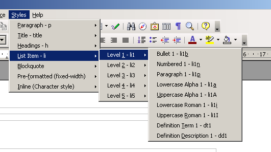

Use styles: Don't bury them
2006-12-01
But this has me worried that Styles in Writer may get buried even further under the interface, as happened with Microsoft Word:
Many users, especially new ones, don't use or even understand styles. So if you want to win them it is important that they can use the application and explore its advanced functionality without taking lessons in “ styles and how to use them” as a precondition. I still think that they should get into styles later on to get the most out of Writer or OpenOffice.org in general, but it shouldn't be necessary in the beginning. On the other hand styles are a vital part of the OpenOffice.org document concept and pleasing users that want to ignore them shouldn't make working with styles harder for other users.
http://blogs.sun.com/GullFOSS/entry/make_everything_as_simple_as
Could it be that people don't understand styles because OpenOffice.org and Word don't ship with decent style-sheets in their default templates? Because a lot of the buttons on the interface apply direct formatting instead of styles? What if the “bullet” button automatically applied a style (say 'List 1 Bullet') and clicking the demote button changed the style to 'List 2 Bullet'. What if the HTML export system actually produced neat XHTML based on the styles you use. Without styles then there's going to be no decent HTML export. Look at the mess the Writer produces now.
I'm much more interested in how we can teach people how to use styles than in giving up and burying them.
On the ICE project we make it possible for people to be much more productive than they would otherwise be by giving them a template with a good set of styles, and a hierarchical style menu that they can use to do all their formatting.

Here's my suggestion for OpenOffice; make a way to switch between a format driven interface where it's all about applying format attributed individually (left align, bold, indent etc) and another interface the is 100% styles based, where even the bold and italic buttons do things using styles. Actually that's essentially what we're doing with ICE, for both Word and OpenOffice, and maybe one day other word processors.
The ICE-RS project will be developing lots of templates that use the same style names but look quite different, for things like different journal formats. If a newbie could start typing and be able to reformat their document dramatically by choosing a new template would that not be a good thing? In this world few end-users would need to muck around with details like headers because that would be taken care of for them. I know that some word processors ship with a set of templates, but I've never seen consistent use of styles across those templates.
The template support in OpenOffice.org Writer is one of the least usable parts of the program. There is no simple way to attach a different template to a document, you have to copy and paste the contents into a new one, or you can use ICE which has a 'repair' function that lets you apply a new template to one or more documents.